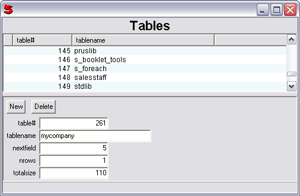

(model, view, query = false, columns = false, reverse = false,
validField = false, readonly = false, title = '', stickyFields = #(),
status = true, linkField = false, protectField = false, noShading = true,
noHeaderButtons = false, primary_accessobserver = false)
This control displays the query's contents in a list. A view is located under the list and when a record is chosen in the list, it is displayed in the view for editing. Adding and removing records is also supported.
model should be passed as an Object with the first member being the name of the model class. The other members will be used as arguments for creating an instance of the model class. The model's responsibility is to provide methods for updating and retrieving database records. There is already a basic model written for use with this control and it is called ExplorerListModel. This model takes three arguments. The first is the query, which is required and is passed as a string. The second is keyfields which is passed as an object containing field names that when combined form a unique key. It is okay to have a single field as the key. The third argument, headerFields, is used to specify which fields from the header will be copied into each of the detail records. This argument is only used by ExplorerListModelLinked (when you have a header and line-items and the ExplorerListView is used to display the lines). This is passed as an object containing field names and should be an empty object unless ExplorerListModelLinked is used.
The view argument should be passed as a control specification. The top level control must support Get and Set methods. It is recommended that RecordControl be used for the view.
The query argument is used to specify the query to use for getting the records to display in the listview, as well as for outputs and updates. This can be as simple as just the table name. This argument will default to the model's query.
columns is passed as an object containing field names and is used to set the initial columns of the listview. This option is present for compatability reasons. The desired columns for the listview should be passed to the model instead.
The reverse argument is optional and if the value is true it will cause the records in the listview to show up in reverse order.
If the readonly argument is true then the view will be readonly and no changes will be allowed.
A title argument can be specified which will display above the listview. This will default to the query.
The status argument defaults to true and causes the ExplorerListView to have a status bar at the bottom. If this argument has a value of false, then there will be no status bar.
The linkField argument is used when you have line items on an Access screen and the ExplorerListViewControl is used to display the line items. The link field should be a key from the header table. This also requires that a foreign key exists between the header and line item tables.
The noShading argument determines whether or not every second line in the list will be shaded.
The noHeaderButtons argument determines whether or not clicking on the header will sort the list by the column that was clicked on.
If the primary_accessobserver argument is set to true, this control will receive all messages sent by the AccessControl before any of the other controls on the same screen.
For example:
ExplorerListViewControl(
#("ExplorerListModel", "tables" ("table") (table tablename)),
#(Form
(Button 'New') (Button 'Delete') nl nl
(table group:0) nl
(tablename group:0) nl
(nextfield group:0) nl
(nrows group:0) nl
(totalsize group:0)
)
columns: #(table tablename)
title: "Tables"
)
This would produce a screen like the following:
Note: Since the example is using a system table, you won't be able to modify the information.
We can also use ExplorerVirtualListView, which is almost exactly the same, except that the query argument must be specified. This uses a virtual listview which does not load all the data into memory and is more suited to dealing with large amounts of data.
ExplorerVirtualListViewControl(
#("ExplorerListModel", "tables" ("table") (table tablename)),
#(Form
(Button 'New') (Button 'Delete') nl nl
(table group:0) nl
(tablename group:0) nl
(nextfield group:0) nl
(nrows group:0) nl
(totalsize group:0)
)
query: "tables"
columns: #(table tablename)
title: "Tables"
)
For more information on stickyFields, validField, and protectField parameters, please refer to AccessControl.
See also: BrowseControl, ListViewControl